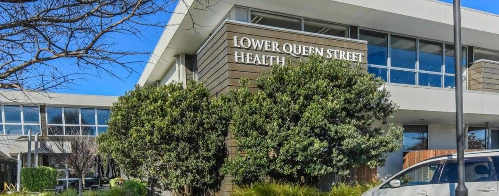
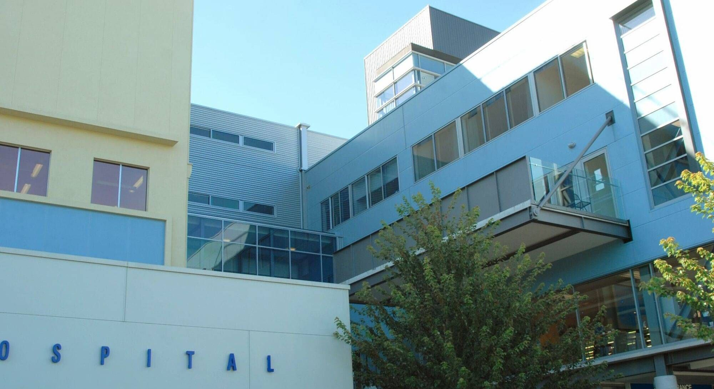

Top of the South Clinic
For all referral information and clinical concerns please email us rather than phone. Please note, referral by your GP or nurse practitioner is required for an appointment. We will then contact you when our Cardiologists have reviewed your referral.
For urgent appointment changes only please phone 027 229 5860, otherwise please email: clinicalsupport@topofthesouthcardiology.co.nz
For urgent appointment changes please phone Kate on 027 229 5830, otherwise please email: katefisher@topofthesouthcardiology.co.nz
Please note fees may apply for last minute cancellations.
Postal address: PO Box 3744, Richmond 7050
Kate Fisher — Clinical Support

